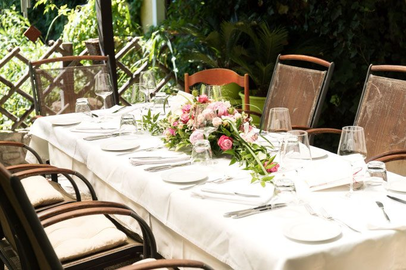
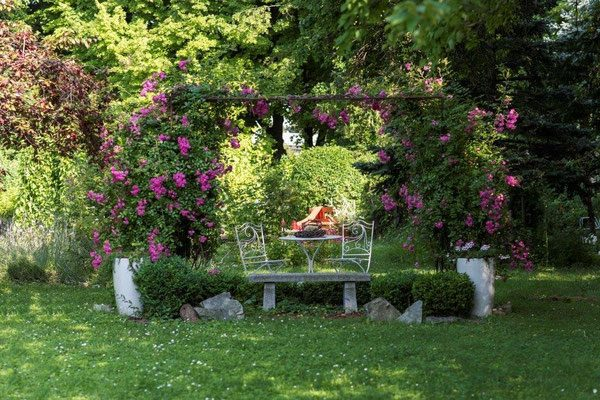
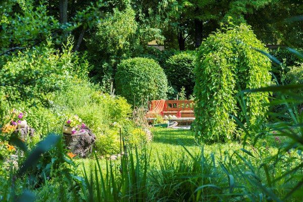

Gourmetbereich
Der stilvolle Kern des Hauses im renovierten Stadl – für Menüs, Weinbegleitung und lange Abende.
Karte ansehenEbreichsdorf · Niederösterreich
Ein liebevoll renovierter Stadl aus den 1930er-Jahren, eine Küche, die das Beste aus der Umgebung holt, und ein Garten, der selbst zur Hauptspeise wird. Franz Rosenbauch kocht, Karl Rosenbauch schenkt ein – seit vier Generationen an derselben Adresse.

Aktuelles
Alle Termine der laufenden Saison – Reservierung für die Genuss-Events erforderlich, die Teilnehmerzahl ist begrenzt.
In dieser Zeit bleiben Restaurant, Vinothek und Garten geschlossen.
Schaugartentag „Kräuter im Garten“, Gartenführung um 11:00, Workshop am Ofyr-Holzgrill ab 11:30. Genussbeitrag EUR 105.
Ab 18:00 Uhr, 12 Tapas & 6 Weine aus Spanien und Portugal. Genussbeitrag EUR 140.
Ab 16:00 Uhr, Flying Dinner im Naturgarten am Josper- und Ofyr-Grill. Genussbeitrag EUR 140.
Rosenbauchs „Natur im Garten“-Schaugarten hat seine Tore geöffnet – Eintritt während der Restaurantöffnungszeiten frei.
Frei buchbar in der Vinothek, 09:00–11:30 Uhr, ab 10 bis 50 Personen. Ab EUR 49 pro Person.
Das Haus
Der liebevoll renovierte Stadl vereint den Charme vergangener Zeiten mit zeitgemäßem Design. Innen erwartet Sie ein stilvolles Ambiente, das mit modernem Interieur eine einladende Bühne für kulinarische Erlebnisse schafft.
Die Küche – inspiriert von der Region, geprägt von einer feinen Prise Raffinesse – überrascht mit fantasievollen Gerichten, in denen vor allem das Beste aus der Umgebung zur Geltung kommt. Die Handschrift von Franz Rosenbauch ist in jedem Teller spürbar; seine Küchenlinie wird seit Jahren mit Hingabe gepflegt und stetig weiterentwickelt.
Dazu serviert Karl Rosenbauch eine sorgfältig kuratierte Auswahl an nationalen und internationalen Weinen, die jedes Menü vollendet. Ob im stilvollen Gourmetbereich, in der entspannten Bar & Lounge oder bei schönem Wetter im idyllischen Erlebnisgarten: Genießen Sie den Moment – vielleicht bei einem Glas Wein oder einem Espresso 1862 zum Ausklang des Tages.

Aus der Küche
Ein Auszug aus der aktuellen Karte. Die vollständige Auswahl mit allen Vorspeisen, Hauptgängen, Desserts und der Weinbegleitung finden Sie auf der Speisekarte.
Drei Räume, drei Stimmungen
Der stilvolle Kern des Hauses im renovierten Stadl – für Menüs, Weinbegleitung und lange Abende.
Karte ansehenEntspannte Atmosphäre für ein Glas Wein, einen Aperitif oder den Espresso 1862 zum Ausklang.
Platz reservierenBei schönem Wetter im Grünen, unter Nuss- und Obstbäumen aus den 1950er-Jahren – inklusive Schaugarten.
Garten entdeckenÖffnungszeiten Herbst 2026
Für Hochzeiten sowie Familien-, Geburtstags- oder Firmenfeiern bewirten wir Sie gerne auch außerhalb der regulären Öffnungszeiten.

Newsletter
Events, Schaugartentage, neue Karten und Betriebsurlaube – einmal im Monat kompakt im Postfach. Zur Bestätigung Ihrer Anmeldung erhalten Sie eine E-Mail mit Aktivierungslink.